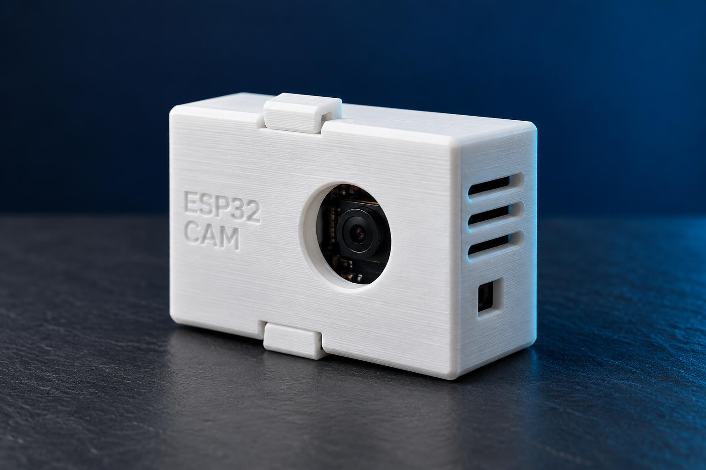
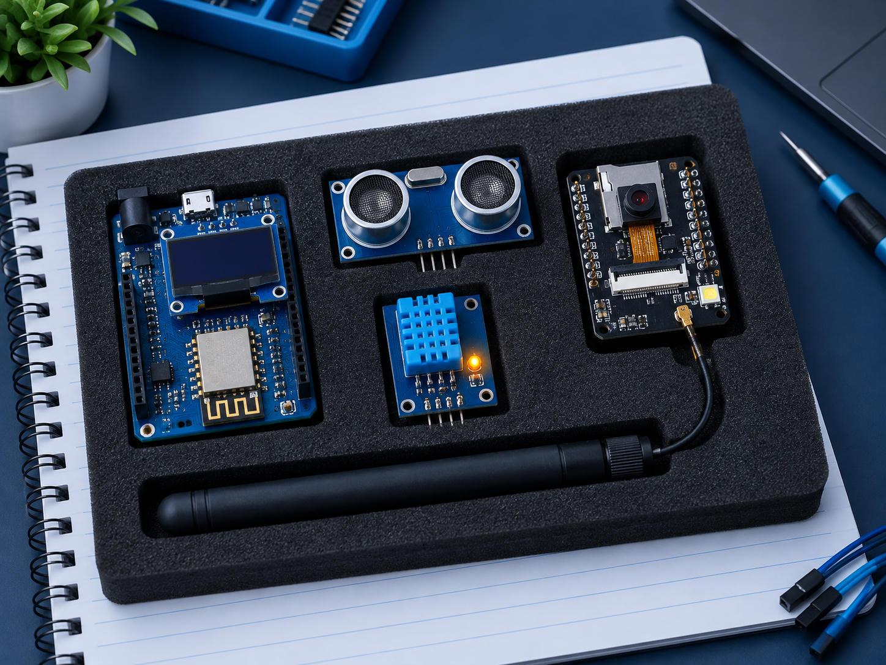
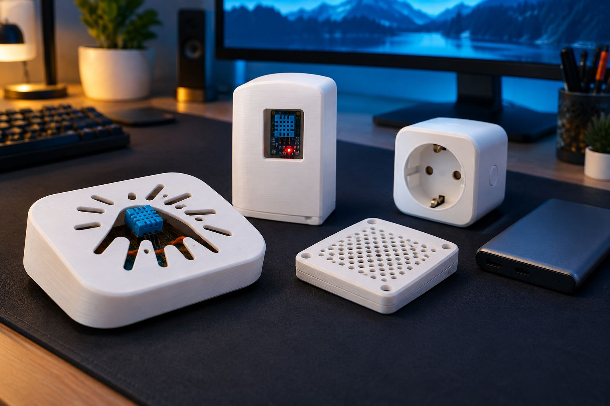
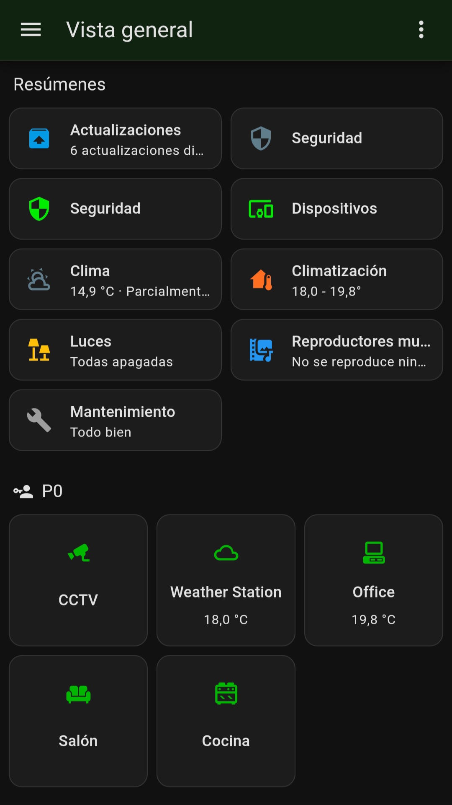
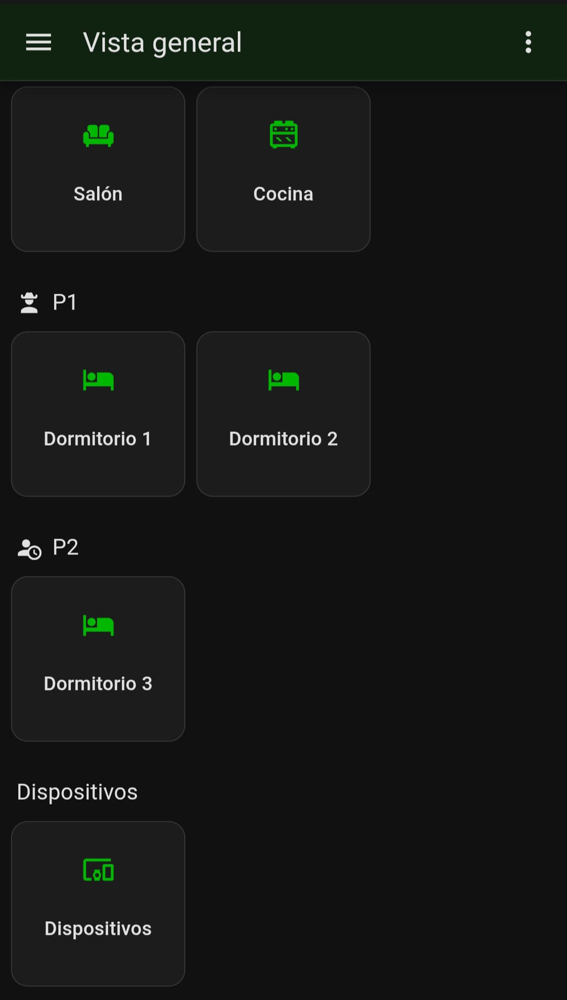
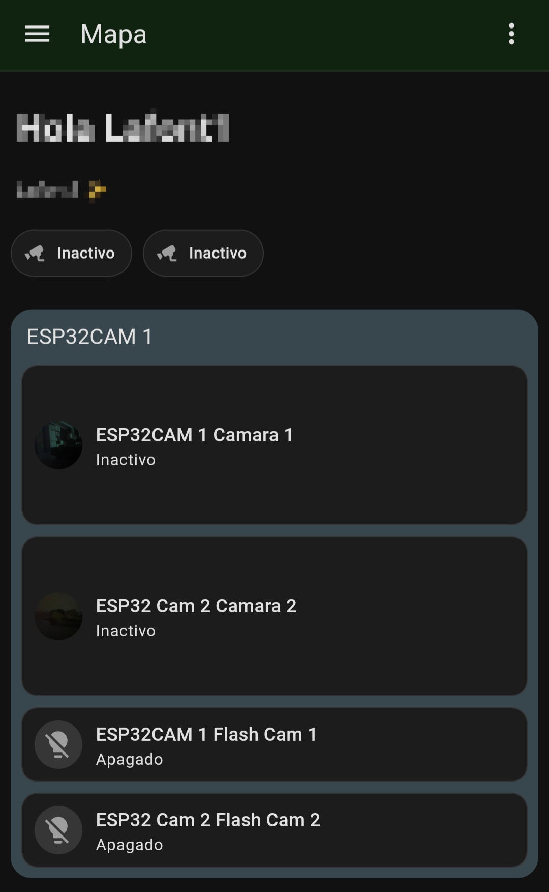
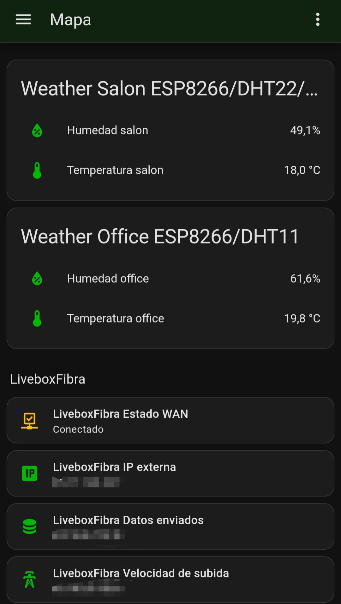

Proyectos
Algunos de nuestros montajes. Las imágenes son ilustrativas.

Carcasas impresas en 3D
Cajas a medida para proteger cámaras ESP32-CAM, con orificio para el objetivo y ventilación.

Placas y sensores
Wemos D1 con pantalla OLED, ultrasonidos, DHT11 y ESP32-CAM, listos para integrarse en Home Assistant.

Instalaciones reales
Sensores de temperatura y humedad en cajas impresas en 3D, funcionando en casa y en oficina.
Home Assistant en el móvil
Así se ve un panel de control real en un móvil Android: resumen de la casa, cámaras, sensores y conexión con el router.

Vista general 1
Resumen de la casa en una sola pantalla: clima, luces, seguridad y dispositivos.

Vista general 2
Otra vista del panel principal, con acceso rápido a las zonas y a los sensores.

Mapa CCTV
Mapa con la ubicación de las cámaras de seguridad y acceso a su imagen.

Mapa de sensores y router
Ubicación de los sensores y estado de la conexión de red con el router.
Gestión por Telegram
Controla tus cámaras y sensores desde un chat de Telegram, con un bot creado con BotFather e integrado en Home Assistant.
Telegram como panel de control
Recibes avisos y envías órdenes desde el móvil, en un chat que ya usas. Home Assistant se conecta a Telegram en modo polling, que no obliga a abrir puertos en el router.
BotFather: creamos tu bot
BotFather es el bot de Telegram que crea otros bots. Con el comando /newbot eliges un nombre y recibes el enlace del bot y un token de API, que es la llave con la que Home Assistant lo controla.
Cámaras en el chat
El bot te envía una foto cuando un sensor PIR o la IA detectan movimiento, y puedes pedir una imagen en directo cuando quieras, sin abrir otra aplicación.
Sensores y relés
Preguntas por la temperatura o la humedad y el bot responde. Con botones en el chat puedes encender una luz o un enchufe, y recibes un aviso si un valor supera el límite que fijes.
Seguridad del bot
Solo los chats autorizados pueden dar órdenes, y el token se guarda en privado: si se filtra, se revoca desde BotFather. Los bots de Telegram no usan cifrado de extremo a extremo, así que no se recomienda enviar por ahí imágenes de zonas muy privadas.
Las ilustraciones son diseños propios y orientativos, no logotipos oficiales. Telegram y BotFather pertenecen a sus respectivos propietarios.
Meshtastic: comunicación sin internet
Una línea de proyecto para estudiar nodos de mensajería LoRa y su integración con la domótica. Las opciones de instalación dependen de la cobertura, el hardware y las condiciones del emplazamiento.
Nodos LoRa en malla
Estudio de nodos que intercambian mensajes cortos sin depender de internet. Un nodo intermedio puede retransmitirlos cuando dos equipos no tienen enlace directo; el alcance se comprueba sobre el terreno.
Repetidores y autonomía
Propuesta de puntos elevados para ampliar la cobertura de la malla. La alimentación con batería y panel solar se dimensiona según consumo, ubicación y horas de sol, con caja y antena adecuadas.
Integración con Home Assistant
Un nodo compatible podría enviar datos de la malla al panel de Home Assistant mediante la integración disponible. Antes de automatizar avisos, se revisan conectividad, privacidad y compatibilidad de las versiones.
Estas son propuestas técnicas; esta sección no acredita instalaciones de Meshtastic ya desplegadas. Los dibujos son propios y no son el logotipo oficial.
Inteligencia artificial y vigilancia
Nuestros dispositivos se pueden integrar con sistemas de visión por inteligencia artificial para distinguir lo habitual de lo sospechoso.
🧠 Detección de personas y reconocimiento facial
Las cámaras se pueden conectar a sistemas de IA que detectan personas y, cuando la ley lo permite, reconocen caras para distinguir a las personas autorizadas de las desconocidas y avisar al móvil ante una posible intrusión.
- Aviso al móvil cuando se detecta una persona desconocida
- Lista de personas autorizadas: familia, empleados o visitantes habituales
- Registro de eventos con fecha y hora en Home Assistant
- Funcionamiento en red local, con más control sobre los datos
El reconocimiento facial trata datos biométricos, una categoría especial del RGPD. Solo se instala con base legal, información clara a las personas afectadas y, cuando procede, evaluación de impacto. Una ESP32-CAM básica solo detecta caras; reconocer a una persona concreta requiere hardware más potente. Más información en la guía de videovigilancia de la AEPD.
🚁 Enjambre de drones de vigilancia
Concepto de una red de drones coordinados, a modo de enjambre, para vigilar campos de cultivo y espacios privados. Los drones patrullan por turnos y vuelven a una estación de carga inalámbrica para seguir trabajando sin intervención manual.
- Patrullas coordinadas sobre cultivos, fincas y espacios privados
- Cámaras con detección de personas y reconocimiento facial en zonas autorizadas
- Estaciones de carga inalámbrica
- Alertas en tiempo real al móvil y a Home Assistant
Está en fase de diseño y todavía no es un servicio comercial. Un dron solo puede volar sobre un espacio privado con permiso de su propietario, y debe cumplir la normativa de AESA: registro como operador (obligatorio si lleva cámara), seguro de responsabilidad civil, título de piloto y, según el caso, autorización específica. Grabar a personas identificables o espacios privados sin su consentimiento puede vulnerar el derecho a la intimidad y el RGPD. Por eso, en un proyecto así los vuelos deben limitarse a los terrenos del cliente, con su permiso, e informar a las personas que puedan ser grabadas.